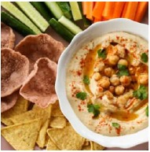

Make-ahead tip
Soak and cook the chickpeas, then freeze them in a small container with some cooking liquid. When ready to make, defrost and simply follow step 4.
EASY • HOMEMADE • DELICIOUS
A creamy, delicious hummus made from scratch with chickpeas, garlic, lemon, tahini and olive oil. Serve it as a spread for wraps and sandwiches or as a dip with crunchy vegetables and crackers.

LET'S GET COOKING
Tick each ingredient as you prepare it.
0 of 7 ingredients ready 0%
STEP BY STEP
Soak and cook the chickpeas, then freeze them in a small container with some cooking liquid. When ready to make, defrost and simply follow step 4.
Add roasted capsicum for roasted capsicum hummus, beetroot chutney or roasted beetroot purée for beetroot hummus, or turmeric for golden turmeric hummus.
Store extra hummus in an airtight box in the fridge for 2–3 days or freeze for up to 2 months.
Approximate values for 1 serving
Nutrition values are approximate and are reproduced from the supplied recipe.